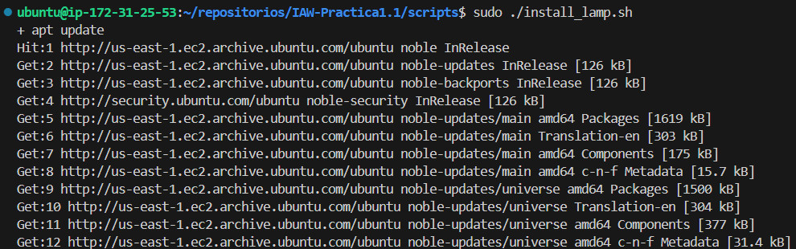
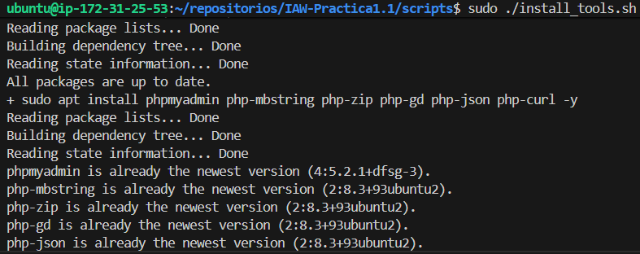
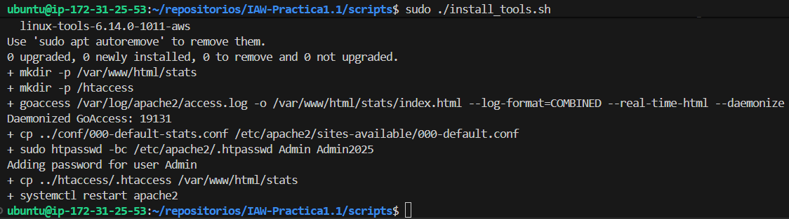

IAW - Práctica 1.1
Instalación de la pila LAMP en una instancia EC2 de AWS con Ubuntu Server
Preparación de la estructura de directorios
Clonamos el repositorio que hemos creado para la práctica previamente en GitHub en nuestra carpeta personal
mkdir ~/repositorios/
cd ~/repositorios/
git clone https://github.com/arodyeb/IAW-Practica1.1.git
Creamos las carpetas conf, htaccess, php y scripts en el directorio raíz del repositorio, donde guardaremos los archivos necesarios para configurar la instalación de la pila LAMP
mkdir conf htaccess php scripts
Definición de variables en archivo .env
Es necesario crear un archivo .env en el directorio de scripts con valores para una serie de variables que serán usadas posteriormente por los scripts de instalación.
Para evitar compartir el valor de dichas variables y que sea personalizable, en su lugar se comparte un archivo como plantilla que se ha de personalizar y renombrar.
Configuración de "install_lamp.sh"
En la carpeta de scripts, creamos el archivo "install_lamp.sh"
cd scripts/
sudo nano install_lamp.sh
Configuramos el script para que se detenga si ocurre algún error y además muestre los comandos por pantalla
#!/bin/bash
set -ex
Actualizamos repositorios
apt update
apt upgrade -y
Instalamos Apache, habilitamos el módulo rewrite y copiamos el archivo de configuración personalizado
apt install apache2 -y
a2enmod rewrite
cp ../conf/000-default.conf /etc/apache2/sites-available
Instalamos PHP, el módulo de ejecución de scripts PHP de Apache y la extensión de conexión entre PHP y MySQL
apt install php libapache2-mod-php php-mysql -y
Reiniciamos Apache para llevar a cabo los cambios y copiamos el archivo index
systemctl restart apache2
cp ../php/index.php /var/www/html/
Instalamos MySQL y damos permisos sobre los archivos del sitio web al usuario y grupo de Apache
apt install mysql-server -y
chown -R www-data:www-data /var/www/html/*
Instalamos MySQL y damos permisos sobre los archivos del sitio web al usuario y grupo de Apache
apt install mysql-server -y
chown -R www-data:www-data /var/www/html/*
El contenido del script debe ser tal que así:
#!/bin/bash
#Configuramos el script para que se detenga si ocurre algún error y además muestre los comandos por pantalla
set -ex
#Actualizamos repositorios
apt update
apt upgrade -y
#Instalamos Apache, habilitamos el módulo rewrite y copiamos el archivo de configuración personalizado
apt install apache2 -y
a2enmod rewrite
cp ../conf/000-default.conf /etc/apache2/sites-available
#Instalamos PHP, el módulo de ejecución de scripts PHP de Apache y la extensión de conexión entre PHP y MySQL
apt install php libapache2-mod-php php-mysql -y
#Reiniciamos Apache para llevar a cabo los cambios y copiamos el archivo index
systemctl restart apache2
cp ../php/index.php /var/www/html/
#Instalamos MySQL y damos permisos sobre los archivos del sitio web al usuario y grupo de Apache
apt install mysql-server -y
chown -R www-data:www-data /var/www/html/*
#Instalamos MySQL y damos permisos sobre los archivos del sitio web al usuario y grupo de Apache
apt install mysql-server -y
chown -R www-data:www-data /var/www/html/*
Al guardar el script de instalación de la pila LAMP, le damos permisos de ejecución:
sudo chmod +x install_lamp.sh
Creamos un archivo .env:
sudo nano .env
En este archivo se deben personalizar una serie de variables a las que luego se hará referencia en otro script:
PHPMYADMIN_APP_PASSWORD=tu_password_phpmyadmin
DB_NAME=nombre_base
DB_USER=usuario_base
DB_PASSWORD=password_base
STATS_USERNAME=usuario_stats
STATS_PASSWORD=password_stats
home=/home/tu_usuario
Creamos el script "install_tools.sh":
sudo nano install_tools.sh
Configuramos el script:
#!/bin/bash
# Configuramos el script para que se detenga si ocurre algún error y además muestre los comandos por pantalla
set -ex
# Importamos el archivo .env
source .env
# Configuramos las respuestas de la instalación de phpmyadmin
echo "phpmyadmin phpmyadmin/reconfigure-webserver multiselect apache2" | debconf-set-selections
echo "phpmyadmin phpmyadmin/dbconfig-install boolean true" | debconf-set-selections
echo "phpmyadmin phpmyadmin/mysql/app-pass password $PHPMYADMIN_APP_PASSWORD" | debconf-set-selections
echo "phpmyadmin phpmyadmin/app-password-confirm password $PHPMYADMIN_APP_PASSWORD" | debconf-set-selections
# Actualizamos repositorios
apt update
# Instalamos phpmyadmin
sudo apt install phpmyadmin php-mbstring php-zip php-gd php-json php-curl -y
# Creamos una carpeta para AdMiner y lo instalamos
mkdir -p /var/www/html/adminer
wget https://github.com/vrana/adminer/releases/download/v5.4.1/adminer-5.4.1-mysql.php -P /var/www/html/adminer/
mv /var/www/html/adminer/adminer-5.4.1-mysql.php /var/www/html/adminer/index.php
# Creamos una base de datos para comprobar que funciona
mysql -u root -e "DROP DATABASE IF EXISTS $DB_NAME"
mysql -u root -e "CREATE DATABASE $DB_NAME"
# Creamos un usuario
mysql -u root -e "DROP USER IF EXISTS $DB_USER@'%';"
mysql -u root -e "CREATE USER '$DB_USER'@'%' IDENTIFIED BY '$DB_PASSWORD';"
# Damos permisos al usuario sobre la base de datos
mysql -u root -e "GRANT ALL PRIVILEGES ON $DB_NAME.* TO $DB_USER@'%';"
# Instalamos GoAccess
sudo apt install goaccess -y
# Creamos la carpeta stats en el directorio de Apache
mkdir -p /var/www/html/stats
# Creamos la carpeta htaccess en el home del usuario
mkdir -p $home/htaccess
goaccess /var/log/apache2/access.log -o /var/www/html/stats/index.html --log-format=COMBINED --real-time-html --daemonize
cp ../conf/000-default-stats.conf /etc/apache2/sites-available/000-default.conf
sudo htpasswd -bc /etc/apache2/.htpasswd $STATS_USERNAME $STATS_PASSWORD
# Copiamos el archivo htaccess
cp ../htaccess/.htaccess /var/www/html/stats
# Y reiniciamos Apache
systemctl restart apache2
Al terminar de configurar el script, guardamos los cambios y le damos permisos de ejecución:
sudo chmod +x install_tools.sh
Una vez configurados los scripts de instalación, ejecutar primero el script de la pila Lamp
sudo ./install_lamp.sh


Y una vez comprobado que el script se ha ejecutado correctamente, ejecutamos el script de herramientas y comprobamos que también se haga sin errores
sudo ./install_tools.sh
 